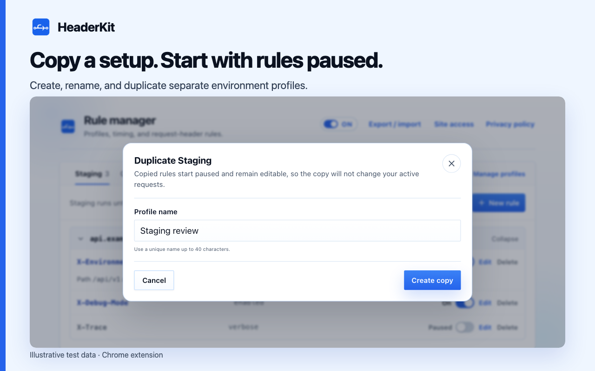

Give each environment its own profile
Apply one profile at a time. Keep other profiles and their On/Paused states saved.
- Choose Manage profiles and all rules in the popup.
- Open Manage profiles → New profile . Name it Staging and save.
- Select Staging. Add rules for an authorized test host.
- Create QA with the required hosts and values.
- Select a profile before triggering requests.

Understand switching and permissions
Approve missing site access when switching profiles. Declining still switches profiles, but unapproved rules remain saved and inactive. Use Grant to allow them later.
Switch profiles to clear the previous activation timer. Choose a new duration for automatic expiry.
Duplicate a useful starting point
Choose Duplicate in Manage profiles . Copy rules into a new profile, all paused. Review names, hosts, scopes, and values before enabling.

Keep changes predictable
- Use the popup for current-host rules. Use the manager for all hosts.
- Pause all rules with the master switch. Preserve individual On/Paused states.
- Rename without losing rules. Review deletion carefully. Deleting a profile also deletes its rules.
- Check copied hosts, scopes, and values before enabling rules.